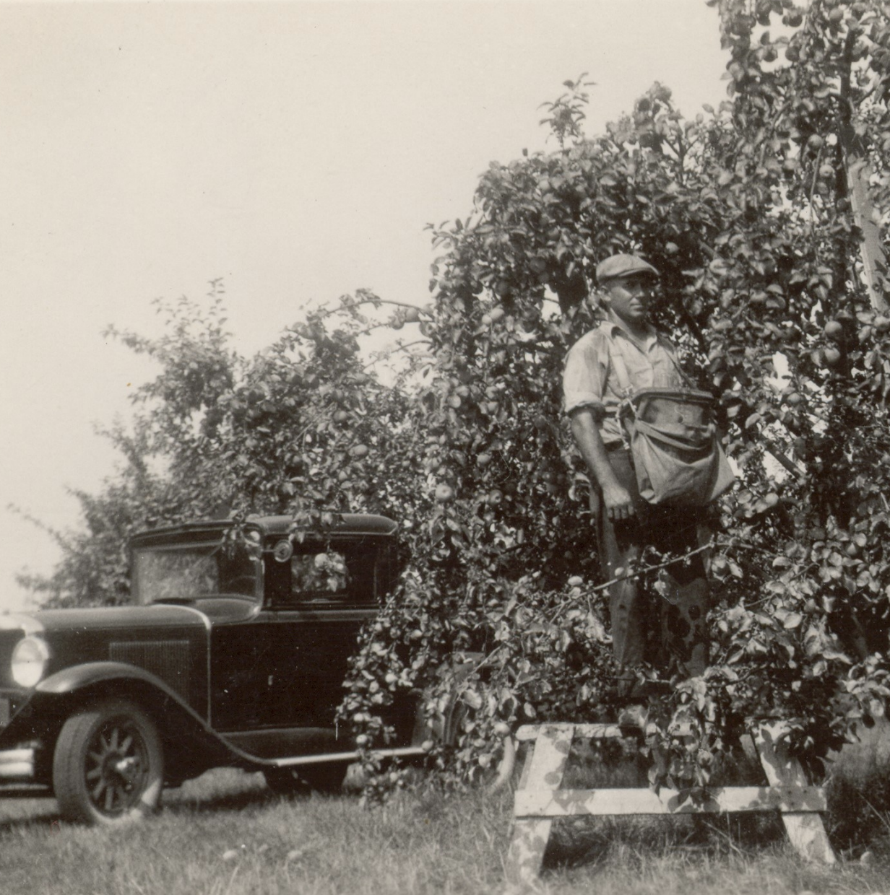
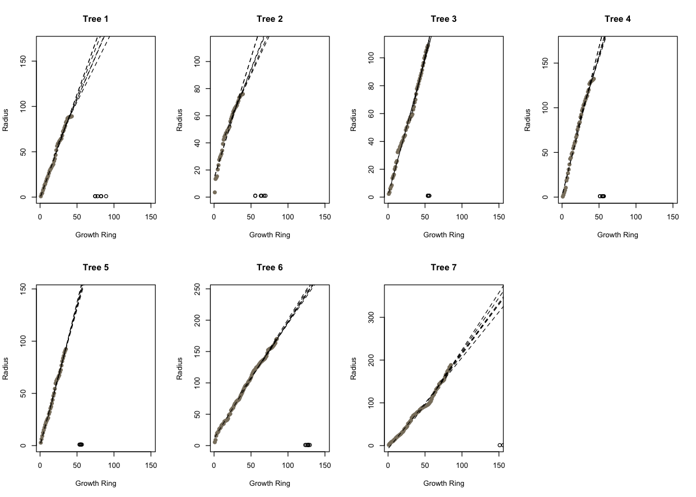
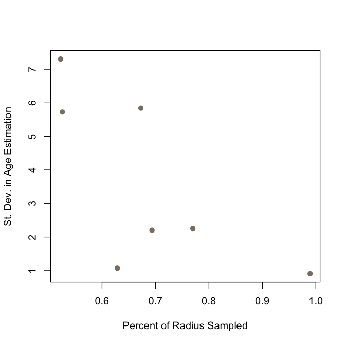
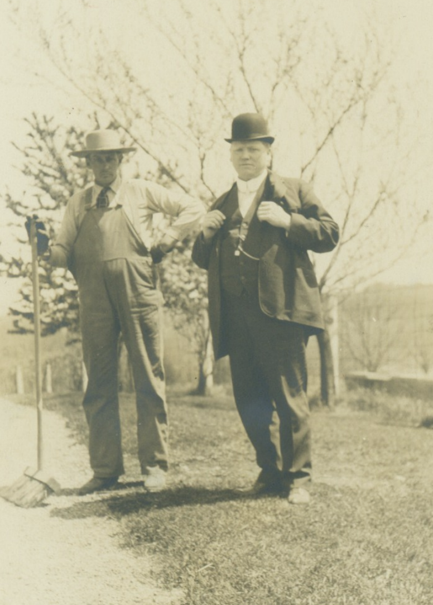

An Archaeological Exercise in Tree Age Estimation
Oakland university was established in 1957 on land donated by Matilda Dodge-Willson. Prior to the university forming, this land was part of the dodge estate where among other agricultural activates, the Dodge family had an apple orchard, originally planted in 1914. This orchard saw changes over time with replantings occurring through the passing decades and many losses occurring as the grounds became increasingly developed.
Today, only about 100 trees remain in this area, mostly surrounding the Adams Road entrance, and with others having been moved onto the main campus. Recently some interest has been generated in identifying if any of the remaining trees could have originated form the original planting in 1914, or at least prior to the establishment of the university as these trees would have considerable conservation value. To age these trees, I modeled radial growth using ring width measurements, allowing me to identify in which year of growth the trees would reach a known diameter, and in turn providing me with their age.

OU's Apple Trees c. 1935.
Meadow Brook Archives, Oakland University
Fruit trees often run into issues with heart rot as they mature, and as such many of the cores I was able to collect included only a portion of the outermost rings. Estimating the ages of these trees would therefore involve a bit of statistical modeling, using the rings we did have and a known diameter on the trees to identify the number of missing rings we would expect to find. Ring processing therefore proceeded following fairly standard dendrochronological methods, placing the cores into paper straws, drying them, and mounting them. All cores were then sanded in a progression from 220 to 1000 grit to reveal the rings more clearly, which I then counted under a microscope, placing a dot into every tenth ring with an awl. All cores were then scanned and ring widths were measured using Coorecorder and C Dendro.

Scan From Tree number 7
Click to open in new tab
Growth was modeled such that width at year 0 was the radius of the tree for just the outermost ring, and every subsequent year of growth adding the width of the next innermost ring. Observing that radial growth for all the trees was relatively linear, I assumed that the radius (\(Y\)) of tree \(i\) at age \(j\) was normally distributed
\( Y \sim \mathcal{N}(\mu_{ij}, \sigma^2)\)
with mean function
\( \mu_{ij} = \beta_0 + age_j \beta_1\)
To account for the extent to which growth rates did change through the lives of these trees, I fit the model several times for each tree, altering the number of years that are considered for estimating growth trajectory, using the inner most 10, 15, 20, 25, and 50 growth rings, as well as all growth rings for those trees where I was able to collect more than 50 rings. By using the coefficient estimates for each model and each tree, I was able to solve the function provided a known radius, and unknown age, thus providing me with a cluster of age estimates for each tree.

Growth model outputs for each tree. Dashed lines indicate modeled growth trajectories, and open circles indicate the estimated ages for each model.
These results seem relatively satisfying to me, with the multiple models for most trees generally agreeing on a rough age estimate. Unsurprisingly however, there was a strong correlation between the percent of a tree's radius I was able to sample and the percision of my age estimate, with the standard deviation in age estimates decreasing as the percent the total tree radius captured by my samples increased.

Relationship between the percent of total tree radius captured by sampling and the standard deviation in estimated age.
Clearly, there does seem to be some error as the oldest trees (6 and 7), have estimated ages which put their year of origins somewhere between the late 1800s and the early 1900s, where it is known that the first planting date would have been in 1914. Even accounting for the age of the trees at the time of planting, it seems that these ages may therefore be slight over estimate. Trees do however, generally exhibit a higher growth rate when younger and slower than old, suggesting that being that those center most rings are missing here, that growth acceleration may not be captured. With this in mind, it still seems reasonable to me that there is some relatively strong support for some of the remaining trees to have originated from the original 1914 orchard planting, though the majority of trees are likely from more recent waves of plantings.

John Dodge (right) with his father-in-law standing in the orchard, circa 1914.
Meadow Brook Archives, Oakland University
|